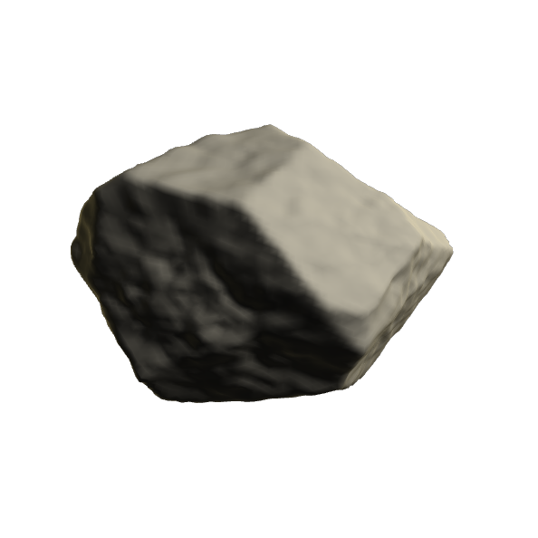

--:--
TomLecointre

{1} NATUREL / ARTIFICIEL
Zones de tension entre les deux, formes d'altération souvent invisibles
{2} TEMPORALITÉS
Traces du passé, dynamiques présentes et projections futures superposées
{3} IMAGINAIRES SPATIAUX
Technologies contemporaines comme prolongements des logiques terrestres
{4} INFRASTRUCTURES
Régimes de visibilité et de transmission qui organisent notre rapport au monde
2022 — 20267 TRAVAUX ↓
2022 — 2026
7 travaux
tom : travaux
Ma démarche interroge les relations que l'humain entretient avec son environnement, qu'il soit naturel, construit ou médiatisé par des systèmes techniques.